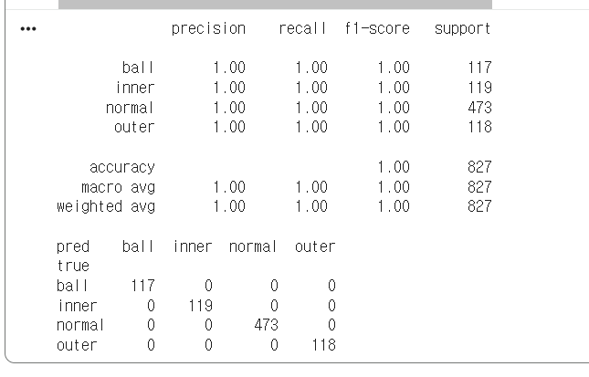
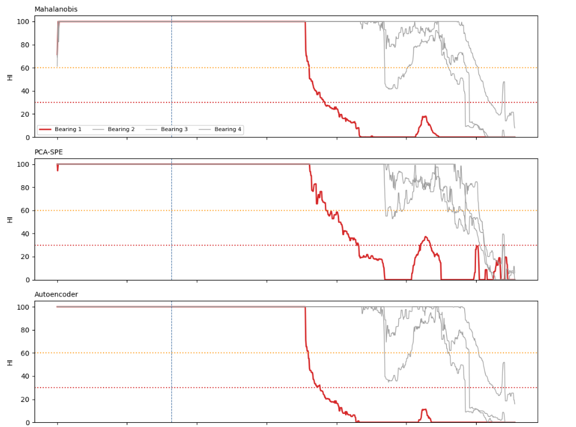
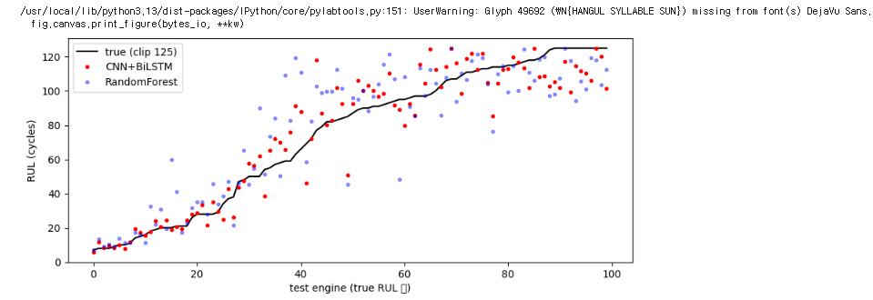
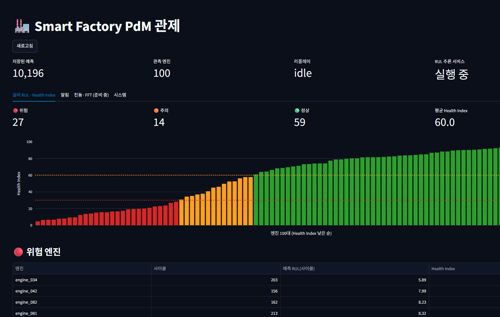

진동·센서 스트림 기반 예지보전(PdM) 관제 시스템
Kafka · TimescaleDB · 딥러닝 RUL
공개 벤치마크 데이터로 구현한 End-to-End 파이프라인
김지선 · 2026. 11.06
왜 예지보전 (PdM) 인가
전통적인 사후·주기적 정비 방식의 한계를 극복하고, 실시간 데이터 분석을 통해 설비 고장을 사전에 예측하여 예기치 않은 다운타임을 최소화합니다
사후정비
고장 난 뒤에 수리
갑작스러운 라인 정지와 큰 손실
예방정비
정해진 주기로 점검·교체
멀쩡한 부품도 교체
예지정비
상태를 보고 시점을 결정
필요할 때만 정비 가능
2
시스템의 위치
공장 계층(ISA-95)에서 데이터 저장 위에 놓이는 PdM 관제 계층
Level 3 · MES / ERP
PdM 관제탑 (본 시스템)
Level 2 · 데이터 저장 (시계열 DB)
Level 1 · SCADA / HMI
Level 0 · PLC 현장 제어
물리 계층 · 센서 / 액추에이터
PdM 관제탑의 3개 모듈
Data Ingestion
구현
Kafka 스트리밍 수집
Feature & ML
부분
FFT·분류·Autoencoder는 Colab 검증, RUL만 서비스 연결
AI Agent (LangGraph)
향후
탐지 → 매뉴얼 RAG → Slack 알림 → 결과 검증
3
데이터셋 3종
서로 다른 세 문제를 각각 맞는 데이터로 검증했습니다
CWRU 베어링
데이터
12kHz 진동, 정상·내륜·볼·외륜
목적
결함 유형 분류
모델
Random Forest · XGBoost
NASA IMS
데이터
20kHz 진동, 984파일(약 164시간) 고장까지 기록
목적
조기 이상 감지 · Health Index
모델
PCA · Autoencoder
NASA C-MAPSS
데이터
터보팬 엔진 100대, 센서 21종 사이클 데이터
목적
잔여수명(RUL) 예측
모델
1D-CNN + Bi-LSTM
4
구현 아키텍처
실시간 서비스로 연결한 부분과 Colab에서 검증한 부분
데이터 리플레이
›
Kafka
›
RUL 추론 서비스
›
TimescaleDB
›
FastAPI
›
Streamlit 대시보드
RUL 추론 → 알림 판정(주의·긴급) → DB 저장 + Kafka 알림 토픽
Colab · 오프라인 검증
특징 추출 (FFT · 엔벨로프)
결함 분류 (RF · XGBoost)
이상 감지 · Health Index (Autoencoder)
RUL 모델 학습 (1D-CNN + Bi-LSTM)
서비스 · VS Code 연결
Docker를 활용한 Kafka 메시지 브로커 및 TimescaleDB 컨테이너 가상화·격리 운영
Kafka 스트리밍 · TimescaleDB 저장
RUL 추론 서비스 (실시간)
알림 판정·기록 · 대시보드
※ 베어링 진동 판단(분류·이상 감지)의 서비스 연결은
향후 과제
5

특징 추출과 결함 분류
엔벨로프 분석으로 결함 주파수를 포착, 부하가 달라도 분류에 성공
Hanning 윈도우 FFT와 엔벨로프 분석으로 28개 특징 추출
0HP 데이터로 학습, 3HP 데이터로 테스트
Random Forest 정확도 1.00 (오분류 0건)
주의: CWRU는 쉬운 벤치마크입니다. 높은 점수만으로 모델이 우수하다고 말할 수 없습니다.
3HP 테스트 827윈도우 (정상 473 · 내륜 119 · 볼 117 · 외륜 118)
6

IMS: 정상만 학습해 이상 감지
정상 패턴을 벗어나면 이상으로 판단,
고장 약 74시간 전에 경보, 건전성 지수(Health Index)가 하락
약 90시간
첫 경보 (정상 41시간만 학습)
73.8시간
고장 전 감지 리드타임 (Autoencoder)
−0.89
시간과 Health Index의 Spearman 상관
빨강 = 베어링 1(고장), 회색 = 베어링 2~4. 125~137시간의 일시 회복은 결함 표면이 마모되며 진동이 줄어드는 현상입니다.
7

C-MAPSS: 잔여수명 예측
딥러닝이 베이스라인보다 오차를 약 27% 줄였습니다
테스트 엔진 100대 · 검은 선 = 실제, 빨강 = CNN+Bi-LSTM, 파랑 = Random Forest
1D-CNN + Bi-LSTM
RMSE 12.98 ± 0.56
NASA Score 325
Random Forest (베이스라인)
RMSE 17.86
NASA Score 995
30사이클 윈도우 · RUL 상한 125 · 5개 시드 평균
8

실시간 파이프라인과 관제
실제 데이터를 Kafka로 흘려 예측·알림·화면까지 검증했습니다
13,096 → 10,196
전송 건수 → 예측 저장 건수 (엔진 100대,
엔진당 처음 29사이클은 윈도우 수집)
RMSE 12.51
서버 경로 결과가 노트북 평가(12.98)와
같은 수준 → 전처리 일치 확인
긴급 29 · 주의 60
알림은 단계가 바뀌는 순간에만 기록,
상태 전환 기준값과 복귀 기준값 사이에 차이를 넣어 알림 반복 방지
9
http://172.24.240.1:8501
한계와 향후 추가 기능
구현하지 못한 부분을 다음 단계로 정리했습니다
한계
IMS는 고장 1건이라 일반화 주장은 불가
CWRU 1.00은 쉬운 벤치마크의 결과
RUL 단위는 사이클 (시간 환산은 가정값)
베어링 판단은 서비스에 미연결
향후 추가 기능
진동 서비스화: DSP 워커, 분류기·Autoencoder 연동, 실시간 스펙트로그램
AI 에이전트(LangGraph): 탐지 → 매뉴얼 RAG → Slack 알림 → 결과 검증
신뢰도: Weibull 생존 분석·신뢰구간, 실제 시간 단위 RUL
모델 확장: 1D-CNN 원신호 분류, 모터·기어 부위 분류, 다중 운전조건
운영 확장: 외부 알림 채널, 설비별 모델·임계값, 처리량 측정
수집 → 예측 → 알림 → 관제까지 End-to-End 흐름을 실제 벤치마크 데이터로 구현·검증했습니다
10